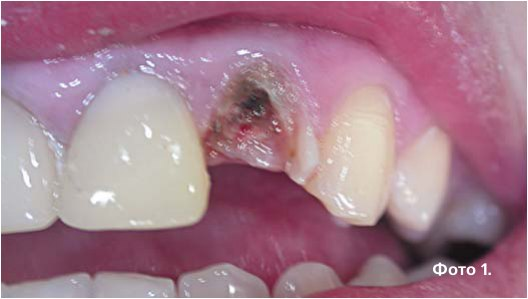
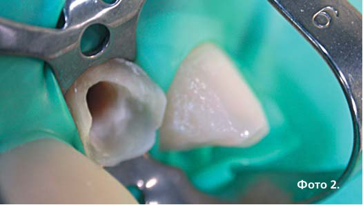
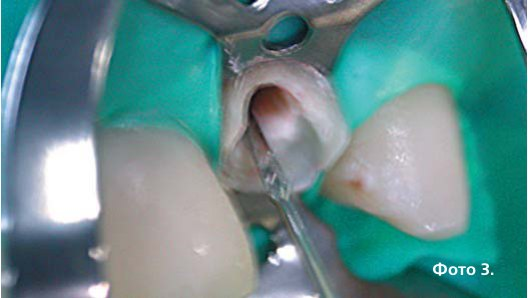
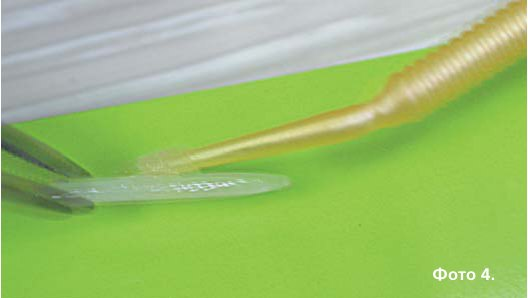
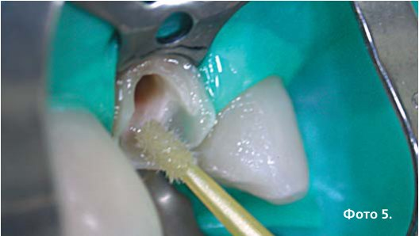
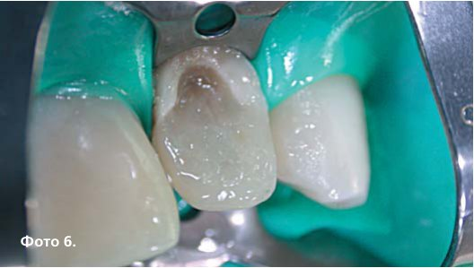
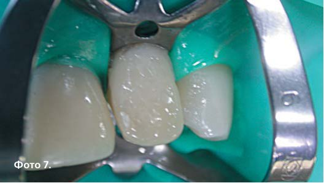
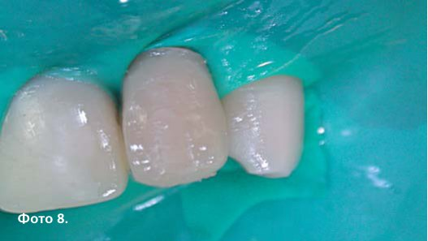
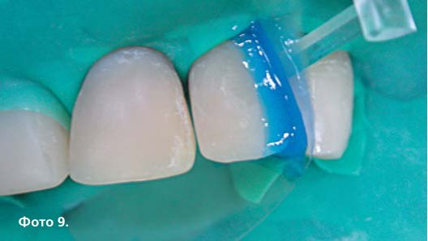
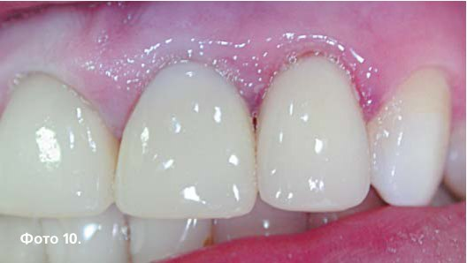

Практичний досвід · журнал «ДентАрт» 2013 №2 (71)
Клінічне використання склопластикових штифтів
GLASS FIBRE POSTS AND THEIR USE IN DENTAL PRACTICE
Сьогодні стоматологія бурхливо розвивається. Поява і вдосконалення нових технологій дає більше можливостей для лікарів-стоматологів у їхній професійній діяльності. Естетична складова в стоматології займає провідні позиції. Лікування карієсу і його ускладнень з появою фотополімерних матеріалів перетворилося з «банального» пломбування на елементи мистецтва. Пацієнти стають усе вимогливішими до виконаних реставраційних робіт при відновленні дефектів зуба. Максимальне збереження здорових тканин зуба — головне завдання роботи лікаря-стоматолога.
Карієс і його ускладнення нерідко призводять до значного руйнування коронкової частини зуба і надалі вимагають якісного ендодонтичного лікування і відновлення втраченої анатомічної форми і функції зуба. Правильно відновлена коронкова частина зуба дозволяє не лише ліквідувати естетичний дефект, нормалізувати функціональні властивості тканин пародонту, жувальну функцію зубощелепного апарату, але й запобігти виникненню психоемоційного стресу у пацієнта, пов'язаного з передчасним видаленням зуба, особливо фронтальної групи.5
Зруйновану коронкову частину зуба можна відновити прямим, напівпрямим і непрямим способами.3, 4, 8 Кожен з них має свої переваги і недоліки.
Поява на ринку стоматологічної продукції нових композитних матеріалів і еластичних штифтів, технологій і методик їх використання розширила вибір способу відновлення коронкової частини зуба. Сучасним вважається відновлення зруйнованих зубів з використанням щадних підходів, за яких препарування зубів мінімальне і при цьому досягаються максимальні естетичні результати.
Часто перевага надається прямій реставрації. При лікуванні ускладненого карієсу під цим мається на увазі реставрація зуба композитними матеріалами із застосуванням внутрішньоканальних штифтів або безштифтовою адгезивною конструкцією. У тих випадках, коли коронкова частина зуба зруйнована на 1/2 і більше, для збільшення площі фіксації реставраційного матеріалу з поверхнею коронки і кореня зуба використовують внутрішньоканальні штифти. Цей спосіб має ряд переваг перед напівпрямим і непрямим способами:
- відновлення коронки зуба здійснюється за одне відвідування;
- усуваються проміжні етапи в зуботехнічній лабораторії;
- робиться щадне препарування твердих тканин зуба;
- лікування має порівняно низьку собівартість;
- ендодонтичне лікування і подальше відновлення здійснює один і той самий лікар.1, 2, 7
Для надійного і тривалого функціонування реставраційної конструкції «ідеальний» внутрішньоканальний штифт повинен мати такі властивості:
- забезпечувати максимальну ретенцію штифта в кореневому каналі;
- максимально зберігати структуру зуба;
- забезпечувати добрий естетичний результат;
- не призводити до перелому кореня;
- не викликати корозію;
- мати антиротаційні властивості;
- рівномірно розподіляти оклюзійне навантаження по всій довжині кореня зуба;
- мати максимальну площу контакту зі збереженими тканинами зуба і міцний зв'язок з ними;
- не мати цитотоксичності та концерогенності;
- бути рентгеноконтрастним;
- бути зручним і простим у роботі;
- легко видалятися з кореневого каналу;
- модуль еластичності штифтів має бути аналогічним модулю еластичності твердих тканин зуба.
Усі ці властивості більшою мірою мають еластичні штифти. Вони рекомендовані у тих випадках, коли у відновлюваних зубах раніше було проведене ендодонтичне лікування і коронкова частина зубів зруйнована на 2/3 і більше.
Слабкою ланкою при прямому способі відновлення зруйнованого зуба є місце з'єднання фіксувального і реставраційного матеріалу з поверхнею внутрішньоканального штифта. Тривалий час це робило непопулярним прямий спосіб реставрації зуба. Поява еластичних штифтів дозволила розв'язати цю проблему.
Для визначення сили адгезії різних силерів до поверхні дентину кореневого каналу і еластичних штифтів ми провели експериментальні спостереження. У дослідження було включено пломбувальні матеріали, які належать до різних груп за хімічним складом:
- склоіономерний цемент — Цеміон Ф (Владміва);
- склоіономерний цемент, модифікований композитом Фуджі Плюс (компанія Джі Сі);
- цемент фіксувальний композиційний хімічного затвердіння — Фіксалат (Стоматехнологія);
- естетичний композитний цемент подвійного затвердіння — Калібра (Дентсплай);
- цемент адгезивний подвійного затвердіння — ЦАПО (ЕСТА);
- нанокомпозит Естет Ікс (Дентсплай);
- світлозатверджувальний стоматологічний реставраційний матеріал ЕСТА-3 (ЕСТА).
Було виготовлено 186 спеціальних зразків фронтальних зубів, які мали відмінності в технології виготовлення з урахуванням виду пломбувального матеріалу, штифта, застосованої адгезивної системи. З метою порівняльного визначення найбільш високої адгезії цементу подвійного затвердіння ЦАПО до поверхні дентину зуба проаналізовано в експерименті три типи зразків, які відрізнялися особливостями попередньої адгезивної підготовки поверхні дентину перед нанесенням цементу. Зразки зубів з іншими досліджуваними пломбувальними матеріалами виконувалися відповідно до інструкції виробника матеріалу. Для вирішення питання технології фіксації склопластикових і скловолоконних штифтів виготовлялися 3 типи зразків із склопластиковими ПАСС штифтами і 6 типів зразків пломбувальних матеріалів із скловолоконними штифтами Джей-дентал (J-dental).
Для визначення адгезії пломбувальних матеріалів до поверхні дентину приготовані зразки розміщували на столику стискного механізму деформаційної установки МРК-1. Зразки поступово навантажували до моменту відриву матеріалу від стінок кореневого каналу. Адгезію розраховували за формулою:
A = F / S, де
А — величина адгезії досліджуваного матеріалу при зміщенні в МПа;
F — граничне навантаження, при якому відбувається порушення адгезивного з'єднання, в Н;
S — площа поверхні, по якій відбувається руйнування (мм2).
У результаті проведених досліджень встановлено, що найбільшу адгезію до поверхні дентину кореневого каналу зуба має склоіономерний цемент, модифікований композитом Фуджі Плюс, але його адгезивні властивості до склопластикових штифтів недостатні для того, щоб він був використаний для фіксації цих штифтів (табл. 1, 2).
| № п/п | Пломбувальний матеріал | Кількість зразків | Показник адгезивної міцності, МПа |
|---|---|---|---|
| 1 | Цеміон Ф | 8 | 23,32±0,63 |
| 2 | Фуджі Плюс | 8 | 51,23±1,52 Р1-2<0,001; |
| 3 | Фіксалат | 8 | 32,43±2,59 Р1-3<0,01; р2-3<0,001; |
| 4 | Калібра | 8 | 38,52±1,08 Р1-4<0,001; р2-4<0,001; р3-4<0,05; |
| 5 | ЦАПО (1-й спосіб) | 9 | 36,75±1,11 Р1-5<0,001; р2-5<0,001; р3-5>0,1; р4-5>0,1; |
| 6 | ЦАПО (2-й спосіб) | 8 | 14,4±0,97 Р1-6<0,001; р2-6<0,001; р3-6<0,001; р4-6<0,001; р5-6<0,001; |
| 7 | ЦАПО (3-й спосіб) | 8 | 9,91±0,43 Р1-7<0,001; р2-7<0,001; р3-7<0,001; р4-7<0,001; р5-7<0,001; р6-7<0,001; |
| 8 | Естет Ікс | 9 | 50,78±1,1 Р1-8<0,001; р2-8>0,1; р3-8<0,001; р4-8<0,001; Р5-8<0,001; р6-8<0,001; р7-8<0,001; |
| 9 | ЕСТА-3 | 8 | 42,66±0,86 Р1-9<0,001; р2-9<0,001; р3-9<0,002; р4-9<0,01; р5-9<0,001; р6-9<0,001; р7-9<0,001; р8-9<0,001. |
Найліпші показники адгезії силерів до скловолоконних і склопластикових штифтів виявлено у вітчизняного композитного фіксувального цементу подвійного затвердіння ЦАПО фірми ЕСТА (м. Київ) (табл. 2). Встановлено, що адгезія пломбувальних матеріалів до скловолоконних штифтів фірми Джей-дентал менша, ніж до склопластикових ПАСС штифтів фірми ЕСТА. Це можна пояснити тим, що скловолоконні штифти Джей-дентал, як і більшість штифтів, виготовлені на основі епоксидних смол, тоді як ПАСС штифти за своєю структурою мають іншу основу, яка найчастіше використовується при виготовленні композитних матеріалів, а саме Біс-ГМА.
| № п/п | Пломбувальний матеріал | Кіл-ть зразків | Показник адгезивної міцності, МПа |
|---|---|---|---|
| 1 | ЕСТА-3 з ПАСС штифтом (1-й спосіб) | 8 | 18,2±0,7 |
| 2 | ЕСТА-3 з ПАСС штифтом (2-й спосіб) | 8 | 33,32±0,56 Р1-2<0,001 |
| 3 | ЕСТА-3 з ПАСС штифтом (3-й спосіб) | 8 | 27,57±0,52 Р1-3<0,001; р2-3<0,001 |
| 4 | Естет Ікс зі штифтами Джей-дентал (1-й спосіб) | 8 | 10,72±0,48 Р1-4<0,001; р2-4<0,001; р3-4<0,001 |
| 5 | Естет Ікс зі штифтами Джей-дентал (2-й спосіб) | 8 | 17,3±0,46 Р1-5>0,1; р2-5<0,001; р3-5<0,001; р4-5<0,001 |
| 6 | Естет Ікс зі штифтами Джей-дентал (3-й спосіб) | 8 | 21,71±0,67 Р1-6<0,01; р2-6<0,001; р3-6<0,001; р4-6<0,001; р5-6<0,001 |
| 7 | Естет Ікс зі штифтами Джей-дентал (4-й спосіб) | 8 | 23,3±0,63 Р1-7<0,001; р2-7<0,001; р3-7<0,001; р4-7<0,001; р5-7<0,001; р6-7>0,1 |
| 8 | Естет Ікс зі штифтами Джей-дентал (5-й спосіб) | 9 | 27,8±0,42 Р1-8<0,001; р2-8<0,001; р3-8>0,1; р4-8<0,001; Р5-8<0,001; р6-8<0,001; р7-8<0,001; |
| 9 | Естет Ікс зі штифтами Джей-дентал (6-й спосіб) | 8 | 16,73±0,61 Р1-9>0,1; р2-9<0,001; р3-9<0,001; р4-9<0,001; Р5-9>0,1; р6-9<0,001; р7-9<0,001; р8-9<0,001 |
| 10 | Естет Ікс з ПАСС штифтами | 8 | 21,92±1,076 Р1-10<0,02; р2-10<0,001; р3-10<0,001; р4-10<0,001; р5-10<0,002; р6-10>0,1; р7-10>0,1; р8-10 <0,001; р9-10<0,001 |
| 11 | Фіксалат з ПАСС штифтами | 8 | 14,38±0,64 Р1-11<0,002; р2-11<0,001; р3-11<0,001; Р4-11<0,001; р5-11<0,01; р6-11<0,001; Р7-11<0,001; р8-11<0,001; р9-11<0,02;Р10-11<0,001 |
| 12 | Фуджі Плюс з ПАСС штифтами | 8 | 8,61±0,55 Р1-12<0,001; р2-12<0,001; р3-12<0,001; р4-12<0,02; р5-12<0,001; р6-12<0,001; р7-12<0,001; р8-12<0,001; р9-12<0,001; р10-12<0,001; р11-12<0,001 |
| 13 | Калібра з ПАСС штифтами | 8 | 24,01±1,08 Р1-13<0,001; р2-13<0,001; р3-13<0,01; Р4-13<0,001; р5-13<0,001; р6-13<0,1; Р7-13>0,1; р8-13<0,01; р9-13<0,001; Р10-13>0,1; р11-13<0,001; р12-13<0,001 |
| 14 | ЦАПО з ПАСС штифтами | 8 | 27,08±0,68 Р1-14<0,001; р2-14<0,001; р3-14>0,1; Р4-14<0,001; р5-14<0,001; р6-14<0,001; Р7-14<0,002; р8-14>0,1; р9-14<0,001; Р10-14<0,002; р11-14<0,001; р12-14<0,001; Р13-14<0,05 |
Ми визначили, що обробка склопластикових ПАСС штифтів адгезивом фірми ЕСТА і скловолоконних штифтів Джей-дентал адгезивом Прайм енд Бонд (Дентсплай) дозволяє отримати кращу адгезію і міцніше з'єднання між штифтом і матеріалом. Доцільніше провадити фотополімеризацію адгезиву на штифті і фотополімерного матеріалу окремо (табл. 2).
Силанування скловолоконних штифтів Джей-дентал перед їх фіксацією сприяє збільшенню адгезії пломбувальних матеріалів до цих штифтів. У той же час адгезія матеріалів до ПАСС штифтів, уже силанованих виробничим способом, значно вища порівняно з адгезією до скловолоконних штифтів Джей-дентал, які силанують безпосередньо перед застосуванням (табл. 2). Обробка штифта силаном збільшує кількість етапів при фіксації штифта, що обумовлює тривалішу реставрацію зуба, збільшує ризик виникнення помилок при обтурації кореневого каналу.
Ведеться дискусія про методику виконання прямої реставрації з використанням еластичних штифтів.
Для ефективного прямого відновлення коронки зруйнованих девітальних зубів ми виконали математичний розрахунок побудови оптимальної конструкції реставрації зруйнованих депульпованих фронтальних зубів з урахуванням товщини стінок кореневого каналу, розміру зуба, виду і параметрів філера, композитного матеріалу, біомеханічних властивостей тканин зуба і навантажень, що виникають при жуванні. Математичне обґрунтування реставраційної конструкції було проведене з віртуальним використанням склопластикового ПАСС штифта, зафіксованого на композитний цемент подвійної полімеризації Калібра, а для реставрації коронкової частини зуба вибрано фотополімерний матеріал ЕСТА-3, що дозволило сформулювати низку практичних рекомендацій.
Так, мінімальна величина поперечного перерізу відновлюваного зуба, яка забезпечує міцність зв'язку матеріалів навколо склопластикового штифта при пропонованому конструктивному рішенні відновлення зуба, повинна становити не менше 4,4 мм при заглибленні штифта на 6,45 мм у кореневий канал (1/2 його довжини) і не менше 4,6 мм при заглибленні штифта на 8,6 мм (2/3 довжини кореневого каналу). Мінімальна товщина стінки кореня зуба навколо штифта при його заглибленні в кореневий канал на 1/2 його довжини має бути не менше 1,6 мм, а при заглибленні на 2/3 довжини — не менше 1,7 мм. Згідно з математичними розрахунками, для оптимальної конструкції штифтового зуба мінімальна довжина склопластикового штифта в коронковій частині зуба доцільна не менше 3,2 мм, а максимальна може бути рівною величині, яку обчислюють за формулою: висота нарощуваної частини, зменшена на половину ширини зуба (але не менше, ніж на 2 мм, якщо половина ширини зуба менша, ніж 2 мм).
Нами також проведено вивчення в лабораторних умовах двоекспозиційним методом голографічної інтерферометрії напружено-деформованого стану (НДС) 24 відновлених девітальних різців відповідно до виконаних математичних розрахунків з використанням двох методик прямого способу реставрації. Досліджували 3 групи зубів: у першій був застосований безштифтовий адгезивний метод відновлення з використанням фотополімера ЕСТА-3; у другій — в реставраційній конструкції різці в склопластиковий ПАСС штифт заглиблювали на 1/2 довжини кореневого каналу, зафіксувавши на композитний цемент подвійної полімеризації Калібра, а далі коронку зуба моделювали фотополімером ЕСТА-3; третя група була аналогічна другій, але склопластиковй штифт фіксували на 2/3 довжини кореневого каналу.
Виявлено, що в усіх трьох досліджуваних групах зубів НДС при вертикальних навантаженнях однаковий, при горизонтальних навантаженнях в 1-ій групі зубів концентрація напруги у місцях з'єднання реставраційного матеріалу з тканинами зуба висока, що може призвести до руйнування реставраційної конструкції, у 2-ій і 3-ій групах передача навантаження через матеріал на тканини зуба рівномірніша. Концентрація напруги в цих групах значно менша, ніж у першій.
Отже, на підставі математичних розрахунків і виконаних лабораторних досліджень встановлено, що найдоцільніше при відновленні зубів, коронки яких зруйновані на 2/3, використовувати штифти, заглиблені на 1/2 довжини кореневого каналу відновлюваного зуба.
Зважаючи на результати власних експериментальних досліджень, математичних розрахунків і лабораторних досліджень, ми запропонували, апробували і запатентували прямий спосіб реставрації девітальних фронтальних зубів з використанням вітчизняних матеріалів фірми ЕСТА. Алгоритм його виконання полягає в етапах роботи, поданих на світлинах і в тексті нижче (фото 1-10).
- Препарування каріозної порожнини девітального фронтального зуба.
- Препарування і очищення кореневого каналу.
- Обтурація кореневого каналу матеріалом на основі епоксидних смол з гутаперчевими штифтами, тимчасова пломба.
- У наступне відвідування — підбір склопластикового штифта фірми ЕСТА необхідного діаметру залежно від розміру і довжини кореневого каналу; розрахунок оптимальної довжини склопластикового штифта в кореневому каналі і коронковій частині зуба (табл. 3, 4).
- Видалення тимчасової пломби, розпломбування кореневого каналу на необхідну глибину за допомогою розвертки необхідного діаметру (табл. 5).
- Примірювання склопластикового штифта в кореневому каналі і корекція довжини штифта за допомогою алмазних борів при швидкості обертів 100-300 тис. об/хв з обов'язковим водяним охолодженням. Занурення склопластикового штифта в спирт на 3-5 хв., висушування з пустера стоматологічної установки.
- Просушування розпломбованої частини кореневого каналу паперовими пінами, обробка поверхні дентину кореневого каналу 37% ортофосфорною кислотою (експозиція 15 с), емалі зуба (експозиція 30 с), ретельне промивання дистильованою водою протравлених поверхонь (для кореневого каналу — використання ендодонтичного шприца).
- Просушування розпломбованої частини кореневого каналу паперовими пінами, нанесення на стінки кореневого каналу праймера ЕСТА (експозиція 15 с), повторна обробка кореневого каналу праймером ЕСТА (експозиція 15 с), видалення надлишків праймера за допомогою повітряного пустера і паперових штифтів.
- Покриття дентину і емалі в ділянці устя кореневого каналу адгезивом ЕСТА (експозиція 20 с), видалення надлишків адгезиву за допомогою повітряного пустера і паперових штифтів, фотополімеризація адгезиву (20 с).
- Обробка підготованого склопластикового штифта тільки адгезивом ЕСТА (експозиція 20 с), видалення надлишків адгезиву за допомогою повітряного пустера, фотополімеризація адгезиву (20 с).





Фотополімерні адгезиви 5-7-го поколінь небажано використовувати при фіксації еластичних внутрішньоканальних штифтів на композитні цементи подвійного затвердіння або хімічні композити, оскільки вони у своєму складі як компонент редокс-каталізатора мають третинний амін, що утруднює зв'язок з адгезивними системами, котрі містять кислотні мономери. У такому разі відбувається кислотно-основна реакція, що інактивує третинний амін з утворенням основи Льюїса. Клінічно це виявляється відсутністю достатнього зв'язку між адгезивом і самим пломбувальним матеріалом. Для вирішення цієї проблеми фірми-виробники випускають активатор хімічної полімеризації, який змішують із фотополімерним адгезивом у співвідношенні 1:1. У той же час, за даними Франкліна Тея, використання активатора хімічної полімеризації разом з фотополімерним адгезивом призводить до погіршення міцності з'єднання на 5-7 МПа.6 Це підтверджується і нашими лабораторними дослідженнями. Так, середня міцність адгезії до дентину зуба у фотополімерного реставраційного матеріалу Естет Ікс (Дентсплай) становила 50,78 МПа (використовувався при цьому адгезив 5-го покоління без активатора хімічної полімеризації), аналогічний показник у фіксувального матеріалу Калібра становив 38,52 МПа (з активатором хімічної полімеризації).
- Ретельне змішування на паперовій палетці пластмасовим шпателем (20 с) до отримання однорідної маси пасти А і пасти Б матеріалу подвійного затвердіння ЦАПО фірми ЕСТА в пропорції 1:1.
- Внесення у кореневий канал каналонаповнювачем приготованого силера ЦАПО. Покриття склопластикового штифта силером і фіксація в кореневому каналі. Світлова полімеризація матеріалу ЦАПО в доступних для проникнення світла ділянках (30 с).
- Відновлення коронкової частини фотополімерним матеріалом.





Виконана за таким алгоритмом реставраційна конструкція девітального фронтального зуба відповідає не лише косметичним вимогам, але і біомеханічним законам, оскільки дозволяє раціонально розподілити жувальний тиск і забезпечити тривале фізіологічне функціонування зубопародонтального комплексу.
| Відновлюваний зуб | Діаметр штифта, мм | Мінімальна товщина стінки кореня зуба навколо штифта при зануренні на 1/2 довжини кореневого каналу, мм | Мінімальна товщина стінки кореня зуба навколо штифта при зануренні на 2/3 довжини кореневого каналу, мм |
|---|---|---|---|
| 1.1, 2.1 | 1,4 | 1,6 | 1,6 |
| 1.1, 2.1 | 1,6 | 1,6 | 1,6 |
| 1.2, 2.2 | 1,0 | 1,5 | 1,6 |
| 1.2, 2.2 | 1,2 | 1,5 | 1,6 |
| 1.2, 2.2 | 1,3 | 1,5 | 1,6 |
| 1.2, 2.2 | 1,4 | 1,5 | 1,6 |
| 3.1, 4.1 | 1,0 | 1,5 | 1,5 |
| 3.1, 4.1 | 1,2 | 1,5 | 1,6 |
| 3.2, 4.2 | 1,0 | 1,5 | 1,6 |
| 3.2, 4.2 | 1,2 | 1,5 | 1,6 |
| Зуб | Глибина занурення склопластикового штифта в кореневий канал, мм | Величина частини внутрішньоканального штифта, що виступає в коронкову частину зуба, мм |
|---|---|---|
| 1.2, 2.2, 3.1, 4.1, 3.2, 4.2 | 6 | 4,32 |
| 1.2, 2.2, 3.1, 4.1, 3.2, 4.2 | 4,4 | 3,17 |
| 1.1, 2.1 | 7 | 5,04 |
| 1.1, 2.1 | 5,25 | 3,78 |
| Діаметр штифта, мм | |||||
|---|---|---|---|---|---|
| 1,0 | 1,2 | 1,3 | 1,4 | 1,6 | |
| Номер розвертки (Мані) | №3 | №4 | №5 | №5 | №6 |
| Номер розвертки (Дентсплай) | №3 | №4 | №5 | №5 | №6 |
| Номер розвертки (Джей-дентал) | №1 | №2 | №3 | №4 | — |
| Номер розвертки (Нордфін) | №1 | №2 | №3 | №4 | №5 |
| Номер розвертки (Томас) | №3 | №4 | №5 | №5 | №6 |
| Колір розвертки (Іннотек) | Жовта | Червона | Синя | Синя | — |
Література
- Барер Г.М., Половец М.Л., Дмитрович Д.А. Стекловолоконные штифты. Сравнительный анализ прочности на изгиб // Стоматолог. — 2006. — №11. — С.43-44.
- Ливанова О.Л., Шумский А.В. Ближайшие и отдаленные результаты эстетической реставрации // Клиническая стоматология. — 2009. — №1. — С.26-31.
- Майке Лаге. Стекловолоконные штифты в постэндодонтическом лечении // Клиническая стоматология. — 2009. — №1. — С.12-14.
- Мурдов М.А. Особенности восстановления культевой части зуба с применением кор-материалов // Клиническая стоматология. – 2005. – №4. – С.10-15.
- Полевая Н.П. Сравнительная характеристика методов прямой реставрации твердых тканей зубов // Стоматолог. – 2007. – №9. – С. 5-13.
- Франклин Тэй. Статус-кво и будущее дентинных адгезивов // ДентАрт. – 2003. – №2. – С.13-16.
- Чиликин В.Н. Выбор штифтовых конструкций и способы их фиксации в корневом канале при прямых эстетических реставрациях зубов // Клиническая стоматология. – 2009. – №1. – С.22-25.
- Терри Д.А. Изготовление реставраций на основе корневых штифтов // Новое в стоматологии. – 2006. – №4. – С.16-25.